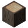
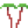

Copyright © 2016-2018 Andreas "MrCerealGuy" Zahnleiter
Stonecraft is an InfiniMiner/Minecraft inspired game started in 2016 based on the Minetest open-source voxel game engine. It will be kept lightweight enough to run on fairly old hardware.
Stonecraft is open-source and free, released under the GNU General Public License v3.0. Thanks a lot to the Minetest community, to "Notch" the creator of Minecraft and to Linus Torvalds, the creator of the free operating system Linux.
Like in other block sandbox games, you can build and destroy blocks everywhere in a near infinite world. There are two game modes, in survival mode you can loose your life, so you have to fight against many creatures and hunger in a dangerous world with many dungeons and woods of spiders. In creative mode you have access to all blocks, items and tools to build all you can imagine. Choose if you want to play either as singleplayer or multiplayer on servers with your friends. If you like, you can run your own Stonecraft server.
Stonecraft is open-source and free, released under the GNU General Public License v3.0.
Table of contents
First, before you can play, you have to create a world. In the world creation dialog you can choose a map generator (default v7) which is responsible for the terrain generation. Then you can add additional biomes and choose other cool stuff.
Note: Some settings need huge cpu consumption so it can be laggy for most players.
In Stonecraft you can download and install addititonal content like mods or texture packs developed from the Stonecraft/Minetest community.
In the screenshot below I've installed the mod 'advtrains'. You can rename or uninstall the package if you want.

To enable 'advtrains' you have to select your world, then click the button 'Configure'.

Now you can enable 'advtrains' either by double-clicking on it in the list below or by clicking on 'Enable MP'.
Important: On the left side you can see the dependencies for this mod, in this case there are no one. Otherwise you have to ensure that your created world has got the required world options activated like 'Technic', 'Mesecons', 'Pipeworks' and so on.
There are a number of different map generators. It is possible to choose between them when creating a map. Some mods may change them radically, also all map generators allow for a lot of configuration in the advanced settings menu.
v5
Generates landscapes based on 3D Perlin noise and is notable for its unique and somewhat strange terrain shape and occasional floating islands. The biomes have to defined by mods first, otherwise it will be a stone-only landscape.

v6
Generated entirely using 2D Perlin noise and has somewhat more “realistic” terrain than v5. The weirdness of v5 is gone. This map generator has predefined biomes: Grasslands/forest, jungle, desert, taiga, tundra and gravel. The biomes can't be modified by mods. Because of the nature of v6, the biomes are much simpler than in the other map generators, and a couple of blocks found in the other map generators can't be found in v6 maps (for example: Silver Sand, Acacia Tree, Orange Coral)
v7
Some innovations over v7, uses 2D and 3D Perlin noise. It is the default selection since Minetest 0.4.15. This map generator is notable for many simple broad and deep “rivers” (or “ridges”) at Ocean level, but they can be disabled. Like in v5, the biome have to be defined by mods first
valleys
Generates a landscape featuring many hills, mountains and valleys. The valleys often contain rivers with River Water. The rivers very different than in v7, since they are not at ocean level and actually flow downhill

flat
This generates an (almost) entirely flat world with some biomes like in v7. Caves can still appear underground (if not disabled) and the map generator can be configured to add occasional hills and lakes.

fractal
Generates a map based on a fractal. It creates by far the weirdest terrain shapes, but its results are mostly predictable. It is possible to choose one of many fractals which are based on the Mandelbrot and Julia set, which is chosen in the advanced settings menu (technical setting name “mgfractal_fractal”).

singlenode
By default, this produces a world with only air everywhere. To be precise, it produces only one type of block, air by default. It is useful for mapgen mods which define their own map generation: first, air is generated, then the mod applies its own functions which generates the terrain.
carpathian
A mapgen featuring a flat base terrain with three types of terrain variation - rolling hills, ridged and step (terraced) mountains. The aim was to create a mapgen with a flat base, somewhere where you can build a village, even a city. But to differentiate it from the flat mapgen, the flat areas are surrounded by hills and various mountain ranges.
Features:

Biomes are a part of the map generation. Biomes are areas with similar ground and underground and vegetation. The biomes depend on the map generator used. Most map generators have the same biomes, but v6 is different.
Biomes in these map generators are defined by optional settings in Stonecraft like Ethereal, swamp and cave biomes and so on. If these are not defined, these map generators only generate stone worlds. Biomes in these map generators are not linked to the terrain shape; this means any biome (including grasslands) can form in flat or very mountainous areas. This section shows the biomes used by Stonecraft.
Grassland
Grassland has large amounts of Dirt nodes and Dirt with Grass blocks, on which flowers, Grass and bushes may appear naturally in this area. The underground is made of stone.

Coniferous forest
Coniferous forests grow in colder areas and are filled with pine trees. Pine tree forests can also be covered with snow in cold regions.
Deciduous forest
Deciduous forests are one of the most common biomes in Stonecraft and form in temperate zones. Trees, apple trees and aspen trees grow here naturally. Generally forests can spawn lakes, ponds, and rivers inside of it. Deciduous forests usually surround plains.
Rainforest
Rainforests (or jungles) are made of large jungle trees which grow thickly packed together. Jungle Grass and Jungle Trees bearing Jungle Leaves spawn here naturally. On fallen jungle tree logs, brown mushrooms may appear rarely. Jungles near oceans form a swamp with waterlilies.

Savanna
The savanna is a dry land which is not a desert, it is populated with acacia trees and dry grass. Flat water bordering to savannahs is likely to have waterlilies and papyri.
Desert
Deserts contain large amounts of desert sand and desert stone. Cacti and dry shrubs also spawn here naturally on desert sand. Cacti can form in two different shapes. Deserts form in hot and dry areas.

Sandstone desert
Sandstone deserts are large barren areas covered by sand with sandstone below. They form in temperate and dry climates.

Cold desert
Cold deserts are large barren areas covered by large amounts of silver sand on top of stone. They form in cold and dry areas.

Snowy grassland
The snowy grassland biome usually borders grasslands and is completely covered by a thin layer snow on top of dirt with snow. A few snow-covered bushes can be found here.
Taiga
Taigas are cold snow-covered biomes with rich vegetation with snow and dirt with snow as surface. They are populated with snow-covered pine trees. In pine tree forests, mushrooms may appear rarely on fallen pine tree logs.

Tundra
Tundras are barren biomes in very cold climates with no vegetation and a single layer of snow blocks on top of stone. They are usually found between taigas, snowy grass lands and glaciers. This is one of the few biomes where snow blocks (rather than just snow) generates.

Glacier
Glaciers form only in the coldest regions and are made of large amounts of ice, covered by a thick layer of snow blocks without any vegetation. Glacier biomes can be either mountain-like as in the screenshot or very flat. Glacier biomes generally border ice sheet biomes near oceans.

Ice sheet
Ice sheets form only in te coldest regions on top of oceans and generally border glacier biomes. Ice sheets are very flat and consist of a single layer of snow blocks with up to 10 layers of ice beneath, “floating” above water in deep oceans.
The v6 map generator has a predefined set of biomes which can't be changed by mods directly. The outcome in different subgames will generally be very similar. Biomes in v6 also somewhat determine the terrain shape. In general, v6 biomes are a lot simpler than the biomes of the other map generators.
Plains
Plains are a quite flat biome. Large amounts of Dirt nodes and Dirt with Grass blocks, on which flowers and Grass may appear naturally (since 0.4.7). There are no bushes. The underground is made of stone.
Forest
Forests are one of the most common biomes in v6 and form in temperate zones. Trees and apple trees grow here naturally, but no aspen trees. Forests usually surround plains. There are no fallen tree logs either.
Desert
Deserts contain large amounts of desert sand and desert stone and often form large cliffs or canyons. Cacti and dry shrubs also spawn here naturally in clusters on desert sand. Deserts spawn underground rivers and lakes which can be over 200 blocks deep. In v6, cacti only form in a “column” shape of up to 4 blocks high.

Jungle
Jungles contains large trees which grow thickly packed together. Jungle Grass and Jungle Trees bearing Jungle Leaves spawn here naturally. Jungles in v6 very similar to the jungles in the other map generators, but there are no fallen tree logs, mushrooms or swamps.
Taiga
The surface is covered with snow blocks on top of dirt with snow. Snow-covered pine tree forests are common in this biome.

Tundra
Tundras are large open fields with thin layers of snow and are populated by dry shrubs. There are two variations of this biome.

Ice sheet
Ice sheets are two layers of ice on top of ocean water. They generate bordering directly to taigas and tundras.
Gravel
Very rarely, unusually large areas of gravel can appear on the surface. These areas consist of nothing but gravel.

Beach
Beaches are made out of sand and form at at height of Y=2 and below, which is near the sea level by default. Beaches often extend deep into the ocean, which can easily turn a large part of the ocean floor into sand. The sand replaces the floor of other biomes. Depending on the terrain shape, beaches can be short or very long and wide (as seen in the screenshot). Clay can be found in the sand and form in small to medium-sized blobs underwater. Beaches are generated based on height and noise; they technically form independent of the water of oceans. This effect can be noted if the water level (with the setting water_level) has been reduced.

Ocean
This biome is just a large body of water that can be up to 250 blocks deep. Oceans are commonly referred to as lakes, but are called oceans because they can be so huge, sometimes even 200-350 blocks across. The natural ocean floor is dirt, but sand is also common because of the beach biomes.

Island
Not classifiable as a biome, but still frequent enough to be classified as a technical biome, islands occur many times in oceans. These could even be referred to as a sub-biome, being a product of another biome. Islands usually raise out of the ground 3-10 blocks, but can get as large as 40-80 blocks tall.
Mountain
Mountains are the most treacherous to scale. Trees and apple trees spawn here naturally. It is quite easy to be killed in a mountain biome if you don't pay attention to where you are going.
Plateau
A giant structure, plateaus are very common around mountain biomes as well as deserts. Plateaus can even float above ground and generate miniature biomes on top of it.
Water caves
Water caves are caves that only occur at sea level, which turn into a huge underground river or lake. These caves can lead thousands of blocks down and are extremely easily to get lost in.
There are three big underground realms:
Here is an overview where the realms are located in the depth:

No worry, you don't have to dig to Nether or Morlendor, there are special portals for them.
Caverealms are huge underground caverns that extend for hundreds of blocks. Within these caverns lie stalagmites of glowing crystals, small glowing gems littering the floor, and variable terrain. . Not to mention plentiful lava and even water springs. Caves spawn between y = -700 and -15.000, and can be quite extensive.
You can go into the nether by either digging deep down or build a obsidian portal as seen in the screenshots below. To activate the portal, rightclick it with a mese crystal fragment. When you go into the portal it will teleport you directly into the nether. A new portal is generated at your spawning point, and it will bring you back to your first portal (Note: the genration of the portal in the nether might take some time (up to 4 seconds)). If one of the portals get destroyed (i.e. an obisidan block gets dug) the connection is destroyed. New portals that are build in the nether will bring you near the surface again.
Rare materials like glowstone, nethersand and netherbricks can be found in the nether. Netherbricks only appear in nether dungeons, and are not craftable.


The Morlendor dimension can be reached by a Morlendor portal. The Morlendor dimension spawns only if you have activated Not So Simple Mobs in the world settings.
Simple underground railway corridors with a few treasure chests. Cobwebs are added if the Simple Mobs world option is activated.
Use the advanced settings to finetune the railway corridors.

Most of these can be changed in the "Change Keys" menu. The default and most important controls are:
| Control | Description |
|---|---|
| W/A/S/D | move |
| Space | jump |
| Left mouse button | Punch, mine blocks, move an item stack in an inventory |
| Right mouse button | use (e.g. open chest or furnace), place blocks, move one item or split items in an inventory |
| Shift+Right mouse button | place blocks |
| Middle mouse button | move 10 items in an inventory |
| Mouse wheel | select item in the hotbar |
| 0-9 | select item in the hotbar |
| Q | drop block, item or tool in hand |
| I | open or close the inventory menu |
| T | open the chat window |
| Strg | descend on ladders or sneak (walk slower, prevents falling off ledges) |
| F9 | Cycle through minimap modes |
| Shift + F9 | Change minimap orientation |
| F12 | Take screenshot |
| Esc | Pause menu/abort/exit (pauses only singleplayer game) |
A boat is a wooden vehicle which floats on any water and can be used to travel on the surface of any water. Travelling by boat is slightly faster than walking.
Usage
To set the boat up, place it on top of water. After is has been placed, use (right-click) it to enter it. You are now on the boat. On the boat, the movement controls are slightly different than usual:

Using refers to a specific activity with a block. The kind of activity depends on the block. Not all blocks can be used. By default, using is done by clicking with the right mouse button on the block that shall be used.
By using, you can:

You can take items from an occupied slot if the cursor holds nothing.
You can drop items onto a slot if the cursor holds 1 or more items and the slot is either empty or contains an item stack of the same item type.
You can exchange items if the cursor holds 1 or more items and the destination slot is occupied by a different item type.
If you hold an item stack and click with it somewhere outside the menu, the item stack gets thrown away into the environment.
You can automatically transfer an item stack to/from the player inventory to/from another item's inventory slot like a furnace, chest, or any other item with an inventory slot when that item's inventory is accessed. When transferring items to/from the furnace, items that can be smelted will automatically go to the input slot. Items in the furnace output slot will automatically go to the player inventory.
If you want to change the default skin, you can do this in your inventory. Just click on the "Skin"-button below.
You see your current skin. Now click on "Change".

Choose your desired skin.
Congratulations! Press 'F7' to switch in third person mode to see your new skin!

To be able to craft anything at all, you need a crafting grid. A crafting grid consists of a number of inventory slots and you can place and move and remove items from it like you can with an inventory. To craft, the items have to be arranged somehow in the crafting grid. Next to a crafting grid there is one output slot, in which the craft appears if you arranged the items in a valid way. Click on this symbol with the left mouse button to make this craft once. The needed items in the crafting grid will be used up. Click on the output slot with the middle mouse button to make this craft up to ten times (depending on how much items are left in the crafting grid). Crafting generally takes no time and you can use the resulting items immediately.
Crafting grids generally work like inventories. So a crafting grid found in your inventory menu can be used/abused as an extension of the player inventory.
There are are two kinds of crafting recipes, shaped ones and shapeless ones.
For a shaped recipe, the items have to be arranged into an exact pattern. If a crafting recipe takes up a smaller rectangle than the crafting grid, it can be moved on any part of the crafting grid. For example, a 2x2 recipe can be arranged on the top left, top right, bottom left or bottom right on a 3x3 crafting grid. If a crafting recipe uses more space than available in the crafting grid, you are unable to craft this item with it. You need a larger one.
For a shapeless recipe, the necessary items just have to be placed on any available slots of the crafting grid. Stacking items does not work, however.
Most crafting recipes are shaped recipes. If not noted otherwise, it is assumed that a crafting recipe is shaped.
| Item | Ingredients | Grid |
|---|---|---|
| Bronze Ingot | Steel Ingot + Copper ingot |  |
| Bronze Ingot | Steel Ingot + Copper ingot |  |
| Bronze Ingot | Steel Ingot + Copper ingot |
| Item | Ingredients | Grid |
|---|---|---|
| Paper | Papyrus | |
| Paper | Papyrus |  |
| Paper | Papyrus |
| Block | Burning time in seconds | Items smelted for fuel | |
|---|---|---|---|
| Coal Block | 370 | 123 1/3 | |
 |
Lava Bucket | 60 | 20 |
 |
Coal Lump | 40 | 13 1/3 |
 |
Jungle Tree | 38 | 12 2/3 |
| Acacia Tree | 34 | 11 1/3 | |
| Tree | 30 | 10 | |
|  | Pine Tree | 26 | 8 2/3 |
 |
Aspen Tree | 22 | 7 1/3 |
 |
Cactus | 15 | 5 |
And many more…
| Input | Output | Smelting time | Description | ||
|---|---|---|---|---|---|
 |
Flour |  |
Bread | 15s | Can be eaten to restore health. |
 |
Cobblestone |  |
Stone | 3s | Used as decoration. |
| Mossy Cobblestone | |
Stone | 3s | Used as decoration. | |
 |
Desert Cobblestone | Desert Stone | 3s | Used as decoration. | |
 |
Clay Lump |  |
Clay Brick | 3s | Used to craft bricks. |
 |
Copper Lump |  |
Copper Ingot | 3s | Can be combined with a steel ingot to make a bronze ingot. |
 |
Gold Lump |  |
Gold Ingot | 3s | Used for crafting Gold Block and Skeleton Key. |
| Skeleton Key | |
Gold Ingot | 5s | Used for crafting Gold Block and Skeleton Key. | |
 |
Iron Lump |  |
Steel Ingot | 3s | Used for crafting several items. |
 |
Heavy Steel Bottle | |
Steel Ingot | 3s | Used for crafting several items. |
 |
Sand/Desert sand | Glass | 3s | Used as decoration or a building material. | |
 |
Pile of Glass Fragments | Glass | 3s | Used as decoration or a building material. | |
 |
Obsidian Shard |  |
Obsidian Glass | 3s | Used as decoration or a building material. |
And many more…
A few simple creatures in Stonecraft, not all are bad.
| Mob | Description | Health/Armor/Damage | Drops |
|---|---|---|---|
Zombie |
Zombies can spawn at every time of day in the world as long there is not too much light. So you will find some in caves, dark forests and of cause a lot at night. If they notice you they will attack. Zombies have 20 HP (like players) and drop sometimes rotten flesh on death. On day Zombies die because of the sunlight. | 20 /- /- /- /- |
Rotten flesh |
Ghost |
Ghosts only spawn at night-time and they don't spawn underground. They are flying in the world and attack you aswell if they notice you. Ghosts have 15 HP and don't drop any items atm (might be changed in future).They can't harm you in your house. If it becomes day Ghosts will take damage by the sunlight, so they will die after a while. | 15/-/- |
- |
| Sheep |
Sheep spawn only at day-time and are friendly mobs. They remain around 5 minutes in the world unless they are tamed with 5 wheat (rightclick). There are four different wool colors: white, grey, brown and black. If there is grass (dirt with grass) they eat the grass and make new wool that way. Sheep have 8 HP and drop 1-2 wool when punched or sheared with shears. They need to eat grass until they can give wool again. | 8/-/- |
1-2 wool |
| Chicken |
Chicken are friendly and spawn only at day-time too. They drop randomly eggs and remain 5 minutes. Currently you can't tame or breed them. They drop chicken meat and feather(s) on death. Eggs can be thrown to spawn (rarely) new chicken, or cooked in furnace to gain fried eggs, which are eatable. | -/-/- |
Chicken meat Feather(s) |
| Oerrki |
Oerrki spawn only at night on stone or dirt like blocks. They attack players and make more damage than Zombies or Ghosts. Daylight can't harm them. | -/-/- |
- |
Not So Simple Mobs are more complex mobs in Stonecraft, for the purpose of increasing the difficulty of playing. There are more than 50 different mobs. They are divided in groups, each one who lives in a different biome.
They all drop life energies. With life energies you can craft tools and special powerful weapons to defend yourself from the monsters.
| Mob | Description | Health/Armor/Damage | Drops |
|---|---|---|---|
| Black Widow |
A black widow is a hostile medium sized spider with a big abdomen. They attack with small but powerful chelicerae. | 10/-/1 1/2 |
Life Energy Spider Leg Web |
Stone Bloco |
A Bloco is a hostile mob made of stone with a little head, short arms and legs. Bloco Is a little clumsy in walking and he chases his enemies rolling like a ball, a cubic ball obviously! He is a true Rolling Stones fan. |
7 1/2/4/1 |
Life Energy Stone |
| Crab |
Crab is a hostile mob that lives on the beach and they don't float in water, they prefer walking on the sand pinching their enemies with their powerful chelas. Crabs have two possible colors of their carapace, red and light orange. | 17/-/1 1/2 |
Life Energy Surimi Crab Chela |
| Crocodile |
A Crocodile is a hostile mob. | 10/1/1 1/2 |
Life Energy Crocodile Tail |
Daddy Long Legs |
A Daddy Long Legs is a spiderlike hostile mob with a small body and obviously, long legs! | 9 1/2/-/1 1/2 |
Life Energy Spider Leg |
| Dolidrosaurus |
A Dolidrosaurus is an aquatic reptile hostile mob with a long tail and a fin at the end. They're fully adapted to living in water and they have two others fins on the side which allow them to swim faster and more precisely. Dolidrosaurus derives from greek, Dolicolos means long, Hydor water and Sauros lizard. Dolidrosauruses have five possible variations of their skin: Dark green, green, light green, blue-green and blue-pink. | 13/2/2 |
Life Energy |
| Duck |
A Duck is cute but evil hostile mob. Walks around the plains with nothing better to do than pecking the players foot. It Is quite small and can survive Minetest cruel world only with the help of her big brothers and sisters that attack the bad players who wants to eat their delicious duck legs. | 5/-/1/2 |
Life Energy Duck Legs Duck Beak |
| Echidna |
An Echidna is a beautiful human hostile mob. It's skin is pale, sick-green and they have black hair. They're half naked but you probably won't care, the one who looses himself in thoose evil, but beautiful, eyes is dead. When you are to close she will slash you with her tail. She emits poison to blocks nearby which does not go away, it causes half heart of damage each game tick and you can drown in it like you would in water. | 45/4/5 |
Life Energy Snake Scute |
| Enderduck |
An Enderduck is tall and very dark hostile mob that spawns at night and hunts poor miners chasing them with high speed and brilliant eyes that allow them to see in the darker night. | 10/-/1 1/2 |
Life Energy Duck Legs Duck Beak |
Felucco |
The Felucco is one of the most fierce carnivores of nssm. It is very fast and attacks anyone with its mighty horns. His name derives form italian: "fel" stands for "felino", feline, because of its similarity with leopards. "Ucc" stands for "mucca", cow, because of his peculiar horns and "o" is the desinence for male in italian. With the fur it is possible to craft a strong armor, but not so durable. Felucco steaks are very nutritious after been cooked. Felucco horns are good raw materials to craft weapons and tools, it is possible to craft a hoe, a knife and a spear. |
16/3/2 1/2 |
Life Energy Felucco Fur Felucco Steak Felucco Horn |
Giant Sandworm |
A Giant Sandworm is a huge hostile mob that likes to stay in one place and damages players when they get within a 7 block range. | 65/4/4 |
Life Energy Worm Flesh Black Sand |
| Icelamander |
The Icelamander is the boss of ice biomes. Nearly nothing could defeat this dangerous mob. Taller than a normal Sam, the Icelamanders have even more frightening jaws than Snow Biters! They have a long tail that helps them to keep the balance on their two legs. The Icelamanders are so cold that they frost everything while walking, not only water! Their frosting power is so strong that they can freeze you in an ice column even from a great distance! Not the simple default ice, but the Coldest Ice, so cold that can freeze the souls of the unlucky creatues trapped in it. Icelamander eats their with their horrible fangs that can damage really bad their preys. You have now certainly understood that Icelamanders are really really dangerous. |
230/6/6 |
Life Energy Ice Tooth Little Ice Tooth Frosted Amphibian Heart Amphibian Ribs |
| Icesnake |
An Icesnake is an amphibian that live in ice plains and mountains. Long ago its body has been adapted to cold biomes using ice and cold in order to preserve the water content in cells. In fact the heat produced by the frosting of ice in the environment allows the Icesnake and the others ice amphibians as Snow Biters, Icelamanders and Icelizards to keep in the liquid form their body fluids. Icesnakes aren't very big or evil but they attack enemies with their fangs very rapidly. |
13 1/2/3/2 |
Life Energy Ice Tooth Little Ice Tooth Frosted Amphibian Heart Amphibian Ribs |
| Kraken |
A Kraken is the king of the sea hostile gigantic octopus mob with long tentacles. There attack with tentacles is devastating but there dimensions doesn't allow them to go fast. Females are red-rose as Octpuses, on the other side the males are dark green. Kraken can produce ink in the water which make seeing in water even more difficult. | 75/3/4 |
Life Energy Tentacle Tentacle Curly |
Larva |
A Larva is a hostile mob. It is the first stadium of Mantis and Mantis Beasts development. Their body is white and the head is brown. After around half a minute they become Mantis or Mantis Beasts! So be careful and slay all of them before it is too late. | 5/-/1/2 |
Life Energy |
Lava Titan |
A Lava Titan is a hostile mob that turns nearby blocks into lava and has two attack styles. - Lava titan hits the ground with his fist, kneels and summons lava blocks diagonaly around players. - Lava titan marches straight toward you rushing through blocks and destroying every block he touches. |
40/6/3 1/2 |
Life Energy Lava Bucket Lava Titan Eye |
| Manticore |
A Manticore is a strong, fast hostile mob. It attacks either with projectiles from a far or with the scorpion sting on it's tail when you're too near. Appearence With face like a man's, a skin red as cinnabar, and is as large as a lion. It has three rows of teeth, ears and light-blue eyes like those of a man; its tail is like that of a land scorpion, containing a sting more than a cubit long at the end. It has other stings on each side of its tail. |
12 1/2/-/2 |
Life Energy Manticore Spine |
Mantis |
A Mantis is a tall and humanlike hostile mob that has two possible colors and attacks with two powerful kung fu moves with its 4 arms! It walks on two legs looking for fresh meat: you! | 7 1/2/-/1 |
Life Energy Mantis Claw |
| Mantis Beast |
A Mantis Beast is a hostile mob that is Very similar to their relatives that walk on only two legs, Mantis Beasts are faster thanks to their 6 claws used in running and their position is more "beastly"! | 10/-/1 1/2 |
Life Energy Mantis Claw |
Masticone |
A Masticone is a hostile mob that alone isn't a real danger, but when you kill one of them two others come to venge their friend. Kill as many as you can then run as fast as you can! | 7 1/2/4/2 1/2 |
Life Energy Masticone Fang Masticone Skull Fragments |
| Mese Dragon |
A Mese Dragon is a massive hostile boss mob with midas touch that turns nearby blocks into mese blocks and has meele and firebreath attack. Mese dragon is not damaged by sunlight, water or lava. | 166 1/2/4/8 |
Energy Globe Rainbow Staff |
| Night Master |
A Night Master is a hostile mob that is a special kind of Moonheron that has three heads. | 15/3/4 |
Life Energy Heron Leg Night Feather |
| Octopus |
An octopus is a hostile mob that is weaker brother of Kraken, they're not able to produce ink and they are all red-rose. | 11/-/1 1/2 |
Life Energy Tentacle |
Phoenix |
A Phoenix is a hostile mob made of fire and energy. Nobody, unless the sun, is brighter than this beatiful bird in the sky. | 30/4/1 |
Life Energy Sun Feather Phoenix Tear Phoenix Nuggets |
| Pumpking |
A Pumpking is a hostile mob king of the pumbooms it is tall creepy creature with a humanlike black thin bodies covered with the blood of their victims, their head is very similar to a Pumpboom and their body to Signosigno. On their death they have a little explosive surprise for the unlucky warrior able enough to defeat them... | 50/5/4 1/2 |
Life Energy Cursed Pumpkin Seed |
| Scrausics |
A scrausics is a hostile mob. | 15/2/2 |
Life Energy Raw Scrausics Wing |
Snowbiter |
A Snow Biter is a hostile mob. | 15/2/2 |
Life Energy Frosted Amphibian Heart Amphibian Ribs Little Ice Tooth |
Spiderduck |
Spiderducks have evolved from Enderducks to become more similar to the spiders. They have a dark skin and 8 legs, but the body is the one of a duck. Even if they are not bosses they are extremely dangerous! In fact if you don't know what to expect from a spiderduck you can easily fall in its web and become a tasteful snack! Spiderducks spawn only at night and because of their dark color they are able to easily blend with the environment. If a spiderduck sees you it starts shooting at you web projectiles. When they hit the target a sticky web covers the soil trapping the victims. And if you have been trapped then expect the spiderduck to come at you and to eat you! |
24-35/2/6 |
Duck legs Life Energy Web Duck beak |
Stone Eater |
A Stone Eater is a hostile mob that is imune to any sword weapon. When under attack he bites back while eating stone that is around. | 14/6/2 1/2 |
Life Energy Stoneater Mandible Stone |
| Swimming Duck |
A Swimming Duck is a hostile mob. | 12 1/2/2/1 1/2 |
Life Energy Duck Legs Duck Beak Duck Feather |
| Tarantula |
A Tarantula is a hostile mob that can either bite or slow down your movement trapping you inside a cocon. After killing it Tarantula Propower appears. | 25/4/4 |
Super Silk Gland |
Mordain |
A Mordain is a hostile mob that likes teleporting. | 16/2/3 |
Life Energy Slothful Soul Fragment |
| Morde |
A Morde is a hostile mob that has an ability to heal himself. | 23 1/2/4/3 |
Life Energy Proud Soul Fragment |
| Morgre |
A Morgre is a hostile mob that likes to explode. | 17/4/1/2 |
Life Energy Greedy Soul Fragment |
Morgut |
Dont let it get to close to you or else it will steal your precious food. You can get your food back by slaying Morgut. With the Gluttonous soul fragment it is possible to craft a strong weapon Sword of Gluttony and Food Bomb |
18/3/2 |
Life Energy Gluttonous soul fragment |
| Morlu |
Dont let it get to close to you or else it will steal your precious equipped armor. You can get your armor back by slaying Morlu. With the Lustful Soul Fragment it is possible to craft strong Morlu armor and Cage Bomb |
28/5/4 |
Life Energy Wrathful Soul Fragment |
| Morvy |
A Morvy is a hostile mob that likes summoning. | 19 1/2/4/2 |
Life Energy Envious Soul Fragment |
| Morwa |
A Morwa is a hostile mob that can either range you from afar or smash you when your close enough. | 28/5/4 |
Life Energy Wrathful Soul Fragment |
Farmable blocks will spawn either new blocks or yield new items, when mined. All farmable blocks have to be on top of another certain kind of block to grow. Some farmable blocks also need light. The “Maximum profit” column shows the maximum possible outcome a single block will yield, including itself. Please notice: Light level 13 on a farmable crop cannot be achieved at night!
Saplings are a group of blocks which grow into trees. They are dropped by leaf-type blocks with a chance of 1 in 20 for each leaf block. The sapling drop “replaces” the leaf block drop—you do not get the leaf block if you get a sapling.
All saplings can be can be placed on any block.
Growth
Saplings will, provided they are under sunlight and are on placed on any dirt or another block that supports growth, will grow into trees after a while. They instantly go from sapling to full tree, there are no intermediate growth stages.
Specifically, all saplings only grow on the following blocks:
Types
There are different saplings, each sapling grows into a different tree.
| Block | Grows on | Needs light? | Drops | Stages |
|---|---|---|---|---|
 Sapling Sapling |
Dirt, Dirt with Grass, Dirt with Grass and Footsteps, Dirt with Dry Grass, Dirt with Snow, Soil, Wet Soil, Desert Sand Soil, Wet Desert Sand Soil | No | Trees, Leaves and  Apples Apples |
2 |
| Jungle Sapling | Dirt, Dirt with Grass, Dirt with Grass and Footsteps, Dirt with Dry Grass, Dirt with Snow, Soil, Wet Soil, Desert Sand Soil, Wet Desert Sand Soil | No |  Jungle Trees and Jungle Trees and  Jungle Leaves Jungle Leaves |
2 |
 Acacia Sapling Acacia Sapling |
Dirt, Dirt with Grass, Dirt with Grass and Footsteps, Dirt with Dry Grass, Dirt with Snow, Soil, Wet Soil, Desert Sand Soil, Wet Desert Sand Soil | No |  Acacia Trees and Acacia Trees and  Acacia Leaves Acacia Leaves |
2 |
| Pine Sapling | Dirt, Dirt with Grass, Dirt with Grass and Footsteps, Dirt with Dry Grass, Dirt with Snow, Soil, Wet Soil, Desert Sand Soil, Wet Desert Sand Soil | No |  Pine Trees and Pine Needles Pine Trees and Pine Needles |
2 |
| Aspen Sapling | Dirt, Dirt with Grass, Dirt with Grass and Footsteps, Dirt with Dry Grass, Dirt with Snow, Soil, Wet Soil, Desert Sand Soil, Wet Desert Sand Soil | No |  Aspen Trees and Aspen Leaves Aspen Trees and Aspen Leaves |
2 |
| Cactus | Any kind of sand | No | Cacti | 4 |
 Papyrus Papyrus |
Dirt, Dirt with Grass. (Water must be to 3 blocks away) | No | Papyri |
4 |
| Group:flora | Dirt with Grass | Yes, 13 or higher | Flora blocks of the same kind | 1 |
| Group:flora | Desert Sand | No |  Dry Shrub Dry Shrub |
1 |
Plants and their Products
Utensils
Other
| Plant | Name | Stages | Item | Itemstring |
|---|---|---|---|---|
.png) |
Barley | 7 |  |
farming:barley |
.png) |
Beans (green) | 5 | .png) |
farming:beans |
.png) |
Beetroot | 5 | .png) |
farming:beetroot |
.png) |
Blueberries | 4 | .png) |
farming:blueberry |
.png) |
Carrot | 8 | farming:carrot | |
| Chili | 8 | farming:chili | ||
.png) |
Cocoa | 4 | farming:cocoa | |
.png) |
Coffee | 5 | .png) |
farming:coffee |
.png) |
Corn | 8 | .png) |
farming:corn |
| Cotton | 8 | .png) |
farming:cotton | |
.png) |
Cucumber | 4 | r.png) |
farming:cucumber |
.png) |
Garlic | 5 | .png) |
farming:garlic |
.png) |
Grapes | 8 | .png) |
farming:grapes |
.png) |
Hemp | 8 | farming:hemp | |
.png) |
Melon | 8 | .png) |
farming:melon |
| Onion | 5 | .png) |
farming:onion | |
| Pepper | 5 | .png) |
farming:pepper | |
.png) |
Pineapple | 8 | .png) |
farming:pineapple |
.png) |
Potato | 4 | .png) |
farming:potato |
| Peas | 5 | .png) |
farming:peas | |
.png) |
Pumpkin | 8 | .png) |
farming:pumpkin |
.png) |
Raspberries | 4 | farming:raspberry | |
|  | Rhubarb | 3 | .png) |
farming:rhubarb |
| Tomato | 8 | .png) |
farming:tomato | |
.png) |
Wheat | 8 | farming:wheat |
Become an engineer in Stonecraft! From simple water-wheel ore proccessing centers, to massive nuclear-powered force-field networks!
Many of the important machines in Technic run on electricity, using wires to connect generators with the consuming machines. These electric circuits consist of a generator, a consumer, wiring, and a switching station. Every independent circuit requires all 4 of these elements to function. In general the machines are all connected on the bottom by wire. Machines should be placed first and then the wire placed under and around them. The wiring should automatically adjust itself to connect to each machine and adjacent wires. If the wiring looks incorrect, it's likely that it won't work so be sure to check this!
Circuits are also grouped into 3 different categories based on how much power they transfer and the corresponding voltage: low voltage (LV), medium voltage (MV), and high voltage (HV). The base level for all electronics is low voltage, so if voltage isn't specified for a electrical component, you may safely assume it's low voltage. Most low-voltage components are upgradable to medium- and high-voltage through further crafting. To get started, you won't need to worry about any MV or HV components, and the basic low-voltage components are fine.
The first step to working with the more advanced machines are to get a basic electrical circuit set up for converting coal into power for other machines. This will rely on the following:
1x LV Fuel Fired Generator
 1x Switching station
1x Switching station
2x LV Cable
The generator and switching station should be placed side-by-side with the wire underneath connecting both of them. Once this is done, additional consumers can be added to the network. A grinder or extractor are both good choices to expand the capabilities of the coal-fired smelter and coal-fired alloy furnace that you already have.
Consumer is a machine which consume energy to do something.
This is the list of all consumers avaible in technic:
This is list of all generators available in technic:
Technic extends the base chest from technic_game with 5 additional chests, each adding additional inventory slots.
There are all types of chests from worst to best:
 Iron chest, 9x10 slots
Iron chest, 9x10 slots Silver chest, 11x10 slots. Can also be named.
Silver chest, 11x10 slots. Can also be named. Mithril chest, 13x10 slots. Note: The mithril chest is not implemented yet, but when implemented will allow for connecting chests around the world to a shared network.
Mithril chest, 13x10 slots. Note: The mithril chest is not implemented yet, but when implemented will allow for connecting chests around the world to a shared network.Technic provides additional resources for building these machines.
Latex is used for manufacturing rubber, which is heavily used for the medium- and high-voltage components within Technic. Latex can be harvested directly from rubber trees (look for the pale green/seafoam leaves) using the tree tap like any other tool. Rubber trees regenerate their latex supplies after about a day.
Tools in Technic fall into two categories: manual and electric. Both sets of tools are unstackable in the inventory. They have limited durability that is reduced during use (they disappear after they hit 0 durability). Manual tools can be regenerated by using the Tool Workshop, so that valuable tools, such as mese or diamond tools can be preserved. Electric tools require charging in Battery Boxes (of any voltage) and will not be destroyed when they reach 0 charge. Higher levels of electric tools are more powerful and contain more charge so they work longer.

This electric tool speeds up harvesting of wood by allowing the harvesting of an entire tree in a single click. Just click on any part of a tree, and the wood and leaves of that tree at that point and above will be cut and dropped on the ground as blocks. It has enough charge to cut down about 5 trees before running out of power.
Note: If you can't find the drops from using the chainsaw, dig around as they can be buried under neighbouring terrain blocks.
This electric tool illumates the area in front of the player. While it is electric, and so requires charging, to use it one only needs to equip it. Punching with this tool does nothing.
The lava can works similarly to the bucket tool and the water can, but instead of carrying water, it can carry lava source blocks (the ones that aren't animated), up to 8 at a time. To use, simply equip and click on lava source blocks (they will highlight in black). Then clicking anywhere where there isn't a lava source block will place them again.
Warning: Be careful where you place these source blocks! Since you're placing lava source blocks, lava will flow out of them and may trap or burn you depending on where you are.
This electric tool operates similarly to a pickaxe, though every block takes exactly one click to drill out. While the Mining Laser allows for faster collection of bulk minerals, it's cutting path can sometimes be undesirable, and the mining drill is useful in these instances.
The higher levels of the mining drill allow for drilling more blocks at once, substantially reducing mining time. At mark-2, the mining drill can drill 3 blocks at once, either 3-deep, 3-wide, or 3-tall. At mark-3, the mining drill can drill 9-blocks at once in a 3x3 layout around the block selected. Switching between these modes can be done by shift-clicking.
Advice: Since these tools require substantially more diamonds than the mining laser, and yet drills slower, it is suggested that a mining laser be built first.


This electric tool is a substantial upgrade above the pickaxe that you start mining with. The laser works by drilling directly forward 7 blocks making a path that's roughly 1-block in diameter. The laser is electric, requiring charging in a battery box (any voltage). As soon as an LV electrical system is set up, this is a great next step.
This electric tool is used for rotating nodes, much like the default Screwdriver tool, but loses charge instead of durability. This is useful for any nodes which have a "front" direction, like stairs, machines, furniture, etc. Nodes are rotated around the Y-axes (vertical).

This manual tool allows for harvesting latex from rubber trees. Extracting latex can be done by hitting rubber trees with it yields for 1 latex. The rubber tree will regenerate its latex supply over the course of a day.
The water can works similarly to the normal bucket tool, but it can hold 16 water_source (the water blocks that don't look like they're flowing) blocks instead of 1. To use, simply equip the water can and click on water source blocks (they will highlight in black). Then clicking anywhere where there isn't a water_source block with the water can equipped will place them.
Warning: Be careful where you place these source blocks! Since you're placing water source blocks, water will flow out of them and may trap or drown you depending on where you are.

The manual tool allows for moving blocks which contain an inventory, like chests. A shift-right-click on a machine/chest will immediately add it to the inventory.
You can control some machines with the digilines.
There are two ways getting information from the switching station:
"get" or "GET" and it will send back.The sent message is always a table containing the supply and demand.
You can send the following to it:
"get": It will send back a table containing the fields "enabled", "power" and "mesecon_mode" which are all integers."off": Deactivate the supply converter."on": Activate the supply converter."toggle": Activate or deactivate the supply converter depending on its current state."power "..power: Set the amount of the power, it shall convert."mesecon_mode "..<int>: Set the mesecon mode.Send to it "get" or "GET" and it will send a table back containing:
demand: A number.supply: A number.input: A number.charge: A number.max_charge: A number.src: Itemstack made to table.dst: Itemstack made to table.upgrade1: Itemstack made to table.upgrade2: Itemstack made to table.You should send a table to it containing the command and for some commands the value field. Some strings will automatically be made to tables:
"get" :arrow_right: {command = "get"}"off" :arrow_right: {command = "off"}"on" :arrow_right: {command = "on"}"toggle" :arrow_right: {command = "toggle"}"range "..range :arrow_right: {command = "range", value = range}"shape "..shape :arrow_right: {command = "shape", value = shape}The commands:
"get": The forcefield emitter sends back a table containing:
"enabled": 0 is off, 1 is on."range""shape": 0 is spheric, 1 is cubic."off": Deactivate the forcefield emitter."on": Activate the forcefield emitter."toggle": Activate or deactivate the forcefield emitter depending on its current state."range": Set the range to value."shape": value can be a number (0 or 1) or a string ("sphere" or "cube").Since the nuclear reactor core can't be accessed by digiline wire because the water layer which mustn't have a hole, you need the digiline_remote to control it. You should send a table to it containing at least the command field and for some commands other fields. Some strings will automatically be made to tables:
"get" :arrow_right: {command = "get"}"self_destruct "..time :arrow_right: {command = "self_destruct", timer = time}"start" :arrow_right: {command = "start"}The commands:
"get": The nuclear reactor sends back a table containing:
"burn_time": The time in seconds how long the reactor already runs. One week after start, when it reaches 7 * 24 * 60 * 60 (=604800), the fuel is completely used."enabled": A bool."siren": A bool."structure_accumulated_badness""rods": A table with 6 numbers in it, one for each fuel slot.
0 means the slot is empty."self_destruct": A setting has to be enabled to use this. The reactor will melt down after timer seconds or instantly."start": Tries to start the reactor, "Start successful" is sent back on success, "Error" if something is wrong.If the automatic start is enabled, it will always send "fuel used" when it uses fuel.
If no amount of solar power is enough to sate your hunger for power, why not give reactors a try? Utilising the latest micro-fission technology, you can produce up to 100,000 EU per second!
The standard reactor structure consists of a 9x9x9 cube. A cross
section through the middle: BBB BBB
BLL LLB
BLWWWLB
BLW#WLB
BLW|WLB
BLL|LLB
BBB|BBBB = Blast-resistant concrete, L = Lead Block,
W = water node, # = reactor core, | = HV cable
The man-hole and the HV cable are only in the middle, and the man-hole
is optional.Using hot lava and water this device can create energy from steam
The machine is only producing LV EUs and can thus not drive more advanced equipment
The output is a little more than the coal burning generator (max 300EUs)
Some machines in Technic can not be classified as producers or consumers.
This is a list of this machines:
The Switching station is the most important part of any network, since without a switching station, no machine will operate!
These peculiar machines can both generate and consume, depending on what's needed. Do note that higher tier machines will charge tools faster!
The Supply Converter can convert one voltage to the next highest or lowest. It will pull a load of 10,000 EU, but will waste it if the other side is unable to accept it. The top is the input voltage, and the bottom is the output. Both sides will require their own switching station!
The solar array is an assembly of panels into a powerful array
The assembly can deliver more energy than the individual panel because of the transformer unit which converts the panel output variations into a stable supply.
Solar arrays are not able to store large amounts of energy.
The LV arrays are used to make medium voltage arrays.
Solar panels are the building blocks of LV solar arrays
They can however also be used separately but with reduced efficiency due to the missing transformer.
Individual panels are less efficient than when the panels are combined into full arrays.
A water mill produces LV EUs by exploiting flowing water across it
It is a LV EU supplyer and fairly low yield (max 120EUs)
It is a little under half as good as the thermal generator.
Pipeworks is used for crafting and usage of pipes and tubes. In addition to providing pipes for transporting liquids and tubes for transporting items, it also contains a number of devices for working with them. Here's what it looks like:
Mesecons is recommended as well for the best possible experience.
Crafting recipes noted here apply only for plain Pipeworks. If Technic is installed (yes it is in Stonecraft), Pipeworks items use alternate recipes. See the Technic documentation for more details.
Pipes are round, flanged devices that can transport liquids around - by default, only water. They automatically connect to other pipes and devices that are pipe-compatible, such as valves, flow sensors, pumps and spigots.
Pipes transport liquids at a speed of one meter (node) per second - a run of 30 pipes will take 30 seconds to transport liquid from one end to another.
Digging a pipe carrying liquid drops the empty pipe - the liquid inside is lost.
Pipes "light up" when they contain liquid.
Here's how you craft it:

In some cases, you may need to run several pipes in parallel, in a confined space. If you tried to use normal pipes for this purpose, they'd just all connect to one another, which you likely didn't want. To deal with this, use straight-only pipes. Aside from only connecting at their ends, their main distinguishing mark is the gray line running the length of the pipe (i.e. a "straight" line).
Here's how you craft it:

Spigots output the liquid input via pipe into the world.
Spigots only connect from one side.
Connecting a spigot to a pipe carrying water makes water flow out of the bottom of the spigot.
Pumps can be placed inside or over a water source. They are toggled on and off with a right-click, or you can directly control them via Mesecons.
Pumps can be connected to pipes from above. Pipes do not connect to pumps from the side or bottom.
Here's how you craft it:

Valves control fluid flow. When active, valves allow liquids to flow through them. Otherwise, liquids cannot flow through them. They are toggled on and off with a right-click, or can be directly controlled using Mesecons.
Here's how you craft it:
Note: currently not working (does not store any liquid). Storage tanks store liquid in a compact way. Placing multiple storage tanks on top of each other forms one large tank with the same capacity as all the single tanks added together.
Storage tanks can be connected to pipes from above or below. Pipes do not connect to storage tanks from the side.
Here's how you craft it:
Gratings are decorative items that appear similar to fine metal grids used as barriers.
Here's how you craft it:
Sealed/airtight pipe entries act as pipes do, except they fill a full block and therefore are generally used for aesthetic purposes, such as running piping through walls.
Sealed/airtight pipe entries can be connected to pipes from the sides, the top, or the bottom.
Here's how you craft it:
Flow sensors output a Mesecons signal when liquid is present in it, and otherwise does not. They can be used to determine when liquid has reached a particular point.
Here's how you craft it:

The various tubes seen below are made from plastic sheeting, which is a three-step process to make and is an essential part of pipeworks. First, craft some leaves (anything in the "leaves" group) to get oil:

Then cook that into paraffin:

Finally, cook the paraffin into plastic:

A couple of objects in pipeworks require one or more gears. Craft those with steel ingots and stone, like so:
Tubes are boxy, transparent devices that can transport items around. They can automatically connect to other tubes and devices that are tube-compatible, such as chests and injectors. Certain devices may connect to tubes only from certain sides.
Breaking a tube carrying items simply drops the items onto the ground.
Here's how you craft it:

Ordinary chests found in the default game connect to tubes from every side except the front.
Items can be added to chests using tube-related devices, or removed from them using filters/injectors.
Attempting to add items to a full chest results in the item being dropped onto the ground.
Locked Chests
Locked chests from the default game connect to tubes and recieve items as ordinary chests do, but items cannot be removed from locked chests with filters/injectors.
Ordinary furnaces found in the default game connect to tubes from every side except the front.

Fuel items can be added to furnaces from the bottom, and items to be smelted can be added from the back. Smelted items can be removed from them using filters/injectors.
Attempting to add items to a full furnace results in the item being dropped onto the ground.
Filters/injectors take items from the node behind them and sends them out in front. They only connect to tubes from the front.
Filters/injectors act only when punched, or when activated via a Mesecons signal.
Right clicking a filter/injector brings up an inventory. If items are added to the inventory, only items matching them will be taken from the node behind it when activated. Items that match the first slot on the filter/injector's inventory are always chosen before items in the second slot, which are always chosen before the third slot, etc.
Filters/injectors cannot be dug if they contain any items in their inventory.
Here's how you craft it:
Mese filters/injectors take entire stacks of items from the node behind them and sends them out in front all at once.
Mese filters/injectors act only when punched, or when activated via a Mesecons signal.
Right clicking a mese filter/injector brings up an inventory. If items are added to the inventory, only stacks of items matching them will be taken from the node behind it when activated. Stacks of items that match the first slot on the mese filter/injector's inventory are always chosen before stacks of items in the second slot, which are always chosen before the third slot, etc.
Mese filters/injectors cannot be dug if they contain any items in their inventory.
Here's how you craft it:

Mese sorting tubes are special tubes that can be used to sort items or force them to move in a certain direction at junctions.
When placed, each direction the tube has a connection to has a distinct color.
Right clicking the tube brings up a form similar to the following:
Each row is associated with the color on the left side.
The far right contains an on/off switch for each row.
When "on", only items that match those in the row associated with the color are allowed to move in that direction. If there are no items in the row, all items are allowed.
When "off", no items will exit through that direction.
If the tube needs to route items directly into a node with an inventory (such as a chest) and that inventory is full, the sorting tube will try one of its other "on" (e.g. enabled) outputs, at that point routing the item as if the sorting tube were just a normal, ordinary tube. Note that the direction the item cam from may be the first option the item takes. If that happens, turn that direction "off". If all connected and otherwise-suitable outputs are "off" and the tube can't route the item, it pops out onto the ground.
When you place an item in these slots, you're placing ghosts only. That is, only a copy of your item is placed and your inventory remains unchanged. When you remove an item from these slots, it's simply deleted.
Here's how you craft it:
Or alternatively:

Detector tubes are special tubes that output a Mesecons signal when an item passes through them.
The tubes turn off again when the item leaves.
Here's how you craft it:

The lua controlled tube can be programmed like a lua controller.
But instead of A, B, C and D, it has the ports blue, red, yellow, green, black and white.
Also there's an additional event that is called when an item comes through the tube. Return in this event the port, the item shall exit (eg. return "blue"). If a wrong value or nothing is returned, the item will go back to where it came from. The event table looks like this:
{
type = "item",
pin = {name = <src dir>},
itemstring = <itemstring>,
item = <itemstack made to table>,
velocity = <velocity of the tubed item>,
}You can craft lua controlled tubes with a luacontroller and a sorting tube.
Accelerator tubes are special tubes that transport items significantly faster than normal tubes. They appear similar to normal tubes, except with a greenish-blue tint.

Here's how you craft it:
Teleporter tubes are special tubes that move items to other teleporter tubes, regardless of the distance separating them.

Putting items into the tube via tube-related devices causes them to be teleported.
Right clicking a teleporter tube brings up a form allowing entry of a channel string, similar to the following:
Only teleporter tubes that have the same channel will be linked together and allow items to pass through.
The switch on the right enables or disables the tube's receiving capability. When "on", the tube can receive items. Otherwise, items can only be teleported out of the tube, but not into it.
Teleporter tubes with channel names beginning with the name of a player, followed by a colon, are settable only by the specified player. This is useful for making private teleporter tube channels.
Teleporter tubes with channel names beginning with the name of a player, followed by a semicolon, are usable only by the specified player, or by other players if the tube is not "On" (unable to receive items). This allows for mail-like systems where items can be sent into private dropboxes, but can't be taken out except by the recipient.
If an item enters a teleporter tube, and there are multiple possible teleporter tubes that it can go to, a target is chosen at random from the possibilities.
Here's how you craft it:
Autocrafters are devices that can automatically follow craft recipes to make new items.
Right clicking an autocrafter brings up a form similar to the following:
The slots in the top left of the form represent a crafting grid, where items can be arranged in the pattern of a craft recipe. Like the Mese sorting tube, items placed in these slots are ghosts, i.e. copies of what you placed. Removing an item simply deletes it.
In the middle is a single slot that shows the result of the proposed recipe, same as in your Inventory display. You can also directly place an item here and the autocrafter will make a guess and fill its recipe slots with the items that should be used to make that item. Removing the item from this slot deletes it and clears the recipe grid.
Below that is a switch to enable/disable the autocrafter. Default is disabled.
The slots in the top right of the form are the output from the crafting operations. That is, items that have been crafted can be found here. These can also be retrieved from the device using filters/injectors.
The slots in the middle of the form, below the craft recipe and result slots, are the autocrafter's internal inventory. Items added by the user or fed in by tubes are stored here temporarily until the autocrafter can use them.
The slots at the bottom of the form are the player's inventory, as usual.
When sufficient materials are present in the autocrafter's inventory to craft according to its recipe, the device automatically starts crafting them until it runs out of materials.
Here's how you build it:
Deployers are devices that place blocks as a player would if one were standing at the exact location of the deployer. They connect to tubes only from the back side.
Deployers act only when activated via a Mesecons signal. On receipt of a signal, they place the next item in their inventory, and if there's something in the way of the deployer's output, that object gets pushed aside first.
Right clicking a deployer brings up a form similar to the following:
The slots in the top of the form are the deployer's inventory, storing materials that are placed when the deployer activates. They are taken in order from left to right, top to bottom. New items can be added here using tube-related devices.
The slots at the bottom of the form are the player's inventory.
Upon activation, a deployer places a node from its inventory into the space directly adjacent to its front side if and only if the space is air. The front side is the face that is fully orange.
Here's how you craft it:
Node breakers are devices that dig blocks as a player would if one were standing at the exact location of the node breaker and dug the target node. They connect to tubes only from the back side.
Node breakers act only when activated via a Mesecons signal.

Upon activation, a node breaker digs the node in the space directly adjacent to its front side if and only if the node is non-liquid, diggable, and not air or unloaded. The front side is the face with the "mouth" with thin interleaved lines resembling a shredder.
When you right-click on it, you get a form similar to the following:
The single slot at the top is for you to add in a custom digging tool. By default, the nodebreaker digs "by hand", but you could for example put a pick, shovel, tree tap, or whatever else you want here as long as it's a viable tool.
Here's how you craft it:
Note: in the past, one used a mese pick to construct a nodebreaker, which it also used as its default tool. This is no longer the case. Old nodebreakers that had nothing in the tool slot will automatically be populated with a mese pick.
Sand tubes are special tubes that vacuum up free items around them. When an item drops near the sand tube, it is sucked up and sent along the tube.
Sand tubes have an effective radius of 2 meters (nodes). Outside of this sphere, items are unaffected.
Here's how you craft it:

Mese sand tubes pick up items like sand tubes, but they do so in a customizable cubic region rather than a fixed spherical one.
To change the range of a mese sand tube, change the distance specified in the form.
The number entered here can be anywhere from 0 (the default) to 8; it represents a sort of cubic radius from the tube, thus the default is to only pick up items within the tube's 1x1x1 node, but, if one entered "5", the tube would pick up items in an 11x11x11 cube.
Crafts are similar to the mese sorting tube:

...or using mese crystal fragments and a regular sand tube:

So far we've already looked at a couple of machines, but not at Mesecons itself. That won't do! This is a usage guide for new Mesecon users, including those without Redstone experience.
Let's look at exactly what Mesecons can do, and how you can use it.
Mesecons is a digital circuitry construction kit that allows players to create circuits that can do nearly anything.
Mesecons resembles real life circuitry in that you have wires that carry information around and various things that affect or are affected by them, but the basic similarities end there.
There are three basic types of things in Mesecons: wires, receptors, and effectors. We'll look at each one in detail below, but for now we'll go through a summary.
Wires conduct signals around, while receptors do the actual creating of those signals. Effectors do things based on those signals. Some things can act as both receptors and effectors, which is useful for doing things like modifying signals.
These are Mesecon wires:
Left to right: normal wire, insulated wire, T-junction wire, corner wire, vertical wire, MESE block. Rear wires are on, front wires are off.
There are a lot of different wires that have distinct uses, but all of them perform essentially the same task. First of all, Mesecon wire has two states: on and off. The on state is generally brighter or more saturated in color than the off state. Wires are off when you place them down, but they can be turned on by being conducted to.
A Mesecon wire that is on (the wire is in the on state) will cause other wires and effectors adjacent to it to turn on as well, a process known as conduction. Which adjacent ones that turn on are determined by the specific type of wire.
In the pictures below, the black boxes denote where the wire conducts. Other locations are completely unaffected by whether it is on or off.
The normal wire conducts in the four cardinal directions, North-East-South-West, but not diagonally. Looking from the side, it conducts to nodes on the same level, or the level above and below it. However, it does not conduct directly above or below:
The insulated wire, in contrast, conducts only at the ends. The direction is determined by the direction you are facing when you place the wire.

The T-junction wire gets its name from the shape it forms and conducts in. The direction is determined by the direction you are facing when you place the wire.
The corner wire conducts only at its ends as well, but they are perpendicular to each other. The direction is determined by the direction you are facing when you place the wire.
The vertical wire has caps on each end that conduct only in the cardinal directions on the same vertical level as well as directly above or below. The thin parts without caps only conduct directly above or below. Vertical wires can be stacked on top of each other, and only the top and bottom ones will be capped.

The MESE block is extended by Mesecons to conduct in the cardinal directions as well as directly above and below.
Two wires will only conduct between each other if they are adjacent and both conduct to the location of the other:

Wires are nice and all, but how do we turn them on if the only way to make one come on is to have something that is already on beside it? That's where receptors come in. Receptors are, in short, things that are not wires, but can also be on and off. Receptors can do things like turning on and off depending on whether there is light, when a player interacts with them, or a lot of things, really. There are far too many types of receptors to describe here, but we'll cover the most important ones.
Power plants are simply always on - they will power anything in the same positions as normal Mesecon wire. Blinky plants behave similarly, but turn on and off every few seconds:

Switches, buttons, and levers are all player controlled - punching switches and levers toggles them between on and off, while buttons turn on when punched and then turn off again after a little while. Switches conduct to the same positions as normal wire, while buttons and levers only conduct to the back or to the node behind the one to the back:
Pressure plates come in wood and stone varieties, which differ mainly in appearance. They turn on when someone or something stands on them - this includes players, mobs, and items. Special rules mean that in addition to conducting to the same locations as normal wire, they also conduct to the node below the node directly below themselves:

Now that we have a way to create and carry signals, it's time to do something with them. Effectors are made specifically for this purpose. Effectors can do things like giving off light, moving nodes around, playing music, or even running chat commands. There are far too many types of effectors to describe here, but we'll cover the most important ones.
Meselamps and lightstone light up when they have an on signal and don't give off any light otherwise. Meselamps are brighter than lightstones, while lightstones are available in many different colors:
Pistons can push a column of nodes and entities by one block, and the sticky piston can also pull the closest one. Entities on top of a stack being pushed horizontally are also moved. Movestones (not shown) do something similar, but can push nodes along a "rail" made of conductive materials:
Noteblocks play a certain note when they receive an on signal. The instrument used to play the note is determined by the node it's placed on top of, while the pitch (how high the note is) is changed by punching it. Placing one on wood planks causes it to make a litecrash sound, tree trunks cause a crash sound, chests cause a snare sound, stone causes a kick sound, glass causes a hihat sound, and anything else causes a piano sound:
Command blocks execute a chat command when they receive an on signal. However, they are not obtainable in survival mode without cheats due to the potential for abuse. Command blocks can only be changed by their owners (the player that placed it) and show a dialog when right clicked, which allows the target, command, and parameters to be set. Certain special commands are also available - more details can be found by using the "/help" chat command:
Now that we know how to create, transmit, and cause actions with Mesecon signals, we can look at the area where Mesecons really shines: manipulating signals with digital logic.
Let's say we want to have street lamps that come on only at night. A basic street lamp looks something like the following:
At the moment, it's not giving off light. Let's give the lightstone an on signal:

Now it's always on. But what about coming on only at night? Let's power it using a solar panel:
Just a small problem remains - it only turns on in the day! That's about as useful as a solar powered flashlight. What we need to do is take the opposite of the solar panel's signal.
This is where digital logic comes in. In digital logic, the operation of taking the opposite of a signal is called a "logical NOT". It just so happens that Mesecons has a few devices that can do this operation, as well as many more. In our case, a Mesecon torch does the job very nicely:
The Mesecon torch simply takes the signal on the other side of the node it's attached to, and changes its state so that it's the opposite. That means that when the solar panel is on, the torch is off, and when the solar panel is off, the torch is on. In our case, we use this to detect the absence of light by taking the opposite of the solar panel's light detection.
There are tons of different ways you can manipulate signals like this. In fact, manipulate them enough and there's nothing you can't build - see the Tic-Tac-Toe and Node Detector articles on this site for inspiration. Logic gates can be used just like they are in real life to build many of the electronics we use every day. For the most complex manipulations, there are even Luacontrollers that can be programmed in-game to do just about anything.
The in-game chat functionality allows players to communicate with each other with short text messages inside a server.
First of all, before you can chat anything at all, you require the "shout" privilege. Don't worry, most servers give you this privilege by default.
You can chat either by opening the chat window or the console which can be opened with the keys T or F10, respectively (assuming you use the default key bindings). Use the chat window or the console to enter a chat message. There are two kinds of chat messages, public ones and private ones.
Public messages
A public message is a message which is visible to all connected players.
Ordinary public messages
Your chat message is a normal public message if it doesn't begin with a "/". It appears like this in the chat log:
<player> messageExample: If you enter "Hello, how are you?" as MrCerealGuy, then this will appear in the chat log:
<MrCerealGuy> Hello, how are you?/me messages
This function is more like a gimmick than anything else. A /me message is a special case of a public message. The only real difference from the ordinary one is its appearance in the chat log. A /me message can be entered with:
/me <message>Replace "<message>" with the actual message. You will get a message in the chat log which looks like this:
* <player> <message>Example: Assume you want to say that you think that Stonecraft is awesome, in the third person. If you enter "/me thinks Stonecraft is awesome.", you get:
* MrCerealGuy thinks Stonecraft is awesome.Private messages
A private message is a chat message which appears only on the chat logs of the sender and a chosen receiver of the message.
You can send a private message (PM) to someone by using the "/msg" server command. Say something in the form of:
/msg <player> <message>Replace "<message>" by your actual message and "<player>" by the name of the player you want to send the message to. The message won't be publicly visible in the chatlog and only appears to you and the other player. Be aware that the messages are not encrypted, so do not transfer really sensitive information using the private message feature.
Example: If your name is "MrCerealGuy" and you entered "/msg MrFr33maN I want to show you my hidden chest.", then this will appear in the chat log of MrFr33maN:
PM from MrCerealGuy: I want to show you my hidden chest.To protect your area from griefing by other player, choose the first corner on the ground of your area you want to protect. Then open the console with F10 and set the marker with /area_pos1.

Now select the second corner in opposite direction of the first corner above the ground and set the marker with the command /area_pos2.
Now it's time to protect your area with /protect <description>, eg. /protect "My Home".
A teleporter pad teleports players, or items to the linked receiver pad. A teleporter must be linked to a receiver first, before you can use it. One teleporter pad can only be linked to one receiver pad, you have to unlink it first, before using a new receiver. A receiver pad can accessed by many teleporter pads.
Example:
If you find an interesting location, then you can place a receiver pad.
Do a right-click on the pad. You have enter a name and a optional description for your receiver pad. For servers you can make your receiver pad public for other players.
Now your receiver pad is placed. At home you can place a teleporter pad.

Do a right-click on the pad and select your receiver pad.
Now you have linked the teleporter with the receiver pad.
You don't need these controls to play, but in special situations these controls can be useful.
| Control | Description |
|---|---|
| Z | Zoom |
| / | Command |
| R | Enable/disable full range view |
| + | Increase view range |
| - | Decrease view range |
| K | Enable/disable fly mode (needs fly privilege) |
| J | Enable/disable fast mode (needs fast privilege) |
| H | Enable/disable noclip mode (needs noclip privilege) |
| F1 | Hide/show HUD |
| F2 | Hide/show chat |
| F3 | Disable/enable fog |
| F4 | Disable/enable camera update (Mapblocks are not updated anymore when disabled, disabled in release builds) |
| F5 | Cycle through debug info screens |
| F6 | Cycle through profiler info screens |
| F7 | Cycle through camera modes |
| F8 | Toggle cinematic mode |
| F10 | Show/hide console |
| P | Write stack traces into debug.txt |
Server commands are special commands to the server that can be entered by any player via the chat to cause the server to do something. There are a few commands which can be issued by everyone, but some commands only work if you have certain privileges granted on the server. Use "/privs" to see your own privileges. If not noted otherwise, the commands in this article are assumed to require no privileges.
To issue a command, simply type it like a chat message or use the console. Alternatively, you can just press the "/" key (only in default controls) which simply opens a chat window where the "/" has already been typed for you and then type the command right away. The command itself will not appear in the chat. Since every command starts with "/", this means that ordinary chat messages can't start with "/"; they will be interpreted as a command instead, even if such a command does not exist. You can tell whether or not a command was successful by the server's response. If you see something "-!- Invalid command: /blargh" in the chat, you probably misspelled something. The most commands will cause the server to write you something else on the chat log for you, if successful.
All commands start with "/". After that, one word follows which is itself followed by some or none arguments. You"ll find the exact syntax in the command reference. In the following command reference, text enclosed in <> is a placeholder for an actual value. Anything written in [] can be omitted.
Quick documentation
Show short documentation of server commands and privileges; it will appear in the chat log, too. In case the help is too long, you can open the console with F10 to view everything again.
Player-related Informational
Chat
These commands require the "shout" privilege to work.
Items
For the /give and /giveme commands, a negative count will count down from 65536. This means for example that giving -1 of an itemstring will give 65535 items of that itemstring, which is also the hard size limit of a stack.
Teleportation
Teleportation is the immediate displacement of any player to a given position. All of the following commands require the "teleport" privilege
Moderation
Password manipulation
These commands allow to set and reset the passwords of any player and require the "password" privilege to work.
Privilege manipulation
All these commands require you to have the "privs" (to manipulate all privileges) or "basic_privs" (to manipulate "interact" and "shout" privileges) privilege.
Excluding players from server
These commands allow the user to kick, ban and unban players. Kicking a player means to remove a connected player from the server. This requires the "kick" privilege. Banning a player prevents him/her to connect to the server again. The player does not need to be connected at this time. Unbanning means to remove a ban from a player, allowing him/her to connect to the server again. The ban and unban commands require the "ban" privilege.
Server-related Informational
Request some information from the server; the answer from the server will also be written into the chatlog.
World manipulation
Server maintenance
All of these commands require the "server" privilege.
Rollback
Allows to use Rollback. Requires the "rollback" privilege.
Every player has a set of privileges, which differ from server to server. Roughly spoken, one's privileges determine what one is able to do and what not. Each privilege has a name (the meaning is described below). Privileges can be granted and revoked from other players by any player who has the privilege called "privs". On a multiplayer server with a default configuration, new players start with the privileges called "interact, shout" and "zoom". To view one's own privileges, one can issue the server command "/privs".
gameplay-related:
chat-related:
world-manipulation-related:
moderation-related:
administration-related:
Mods may make additional privileges available on the server. Issue the server command /help privs to receive a full list (and short descriptions) of all possible privileges on the server.
Using the server's configuration files, a lot of privilege-related stuff can be manipulated.
There is an option in the configuration file for setting the default privileges for new players. default_privs = interact, shout, zoom
The player having the name in the "name" field of the configuration has all the privileges. Privileges are stored in the auth.txt file. The format of every line in that file is name:hashed_password:privs. A real example: mrcerealguy:CcCUjNUDVJxmXmTHj+7WKHvA9Ds:interact,shout,zoom
The auth.txt file is written periodically and at shutdown, so you should edit it only when the server is not running.
WorldEdit is an in-game world editor. Use it to repair griefing, or just create awesome buildings in seconds.
This is a step-by-step tutorial outlining the basic usage of WorldEdit.
Overview
WorldEdit has a "region", which is simply a cuboid area defined by two markers, both of which the player can move around. Every player can have their own region with their own two markers.
WorldEdit GUI buttons and chat commands generally work inside the region selected, or around the first marker.
If you are using the chat commands, follow the steps under Chat Commands. If you are using the WorldEdit GUI, follow the steps under WorldEdit GUI.
It is very simple to select a region using the item "WorldEdit Wand Tool". By left-clicking on an existing stone, you can set the first mark, which is then visible as a number "1" on the block. The second mark is set by right-clicking on an existing block. The block then belongs to the marked area, the numbers on the blocks mark the corners of the rectangular area.
Here are two examples:
Left or right-click sets two marks, in which case the area with the sandstones is marked.
The marked area is always made visible with a check pattern. In the first example you can not see it, because it is in the ground.

Chat Commands
In the chat prompt, enter //p set. In the chat, you are prompted to punch two nodes to set the positions of the two markers.
Punch a nearby node. Be careful of breakable ones such as torches. A black cube reading "1" will appear around the node. This is the marker for WorldEdit position 1.
Walk away from the node you just punched. Now, punch another node. A black cube reading "2" will appear around the node. This is the marker for WorldEdit position 2.
WorldEdit GUI
Open the main WorldEdit GUI from your inventory screen. The icon looks like a globe with a red dot in the center.
Press the "Get/Set Positions" button. On the new screen, press the "Set Position 1" button. The inventory screen should close.
Punch a nearby node. Be careful of breakable ones such as torches. A black cube reading "1" will appear around the node. This is the marker for WorldEdit position 1.
Walk away from the node you just punched. Open your inventory again. It should be on the same page as it was before.
Press the "Set Position 2" button. The inventory screen should close.
Now, punch another node. A black cube reading "2" will appear around the node. This is the marker for WorldEdit position 2.
Chat Commands
In the chat prompt, enter //set mese. In the chat, you will see a message showing the number of nodes set after a small delay.
Look at the place between the two markers: it is now filled with MESE blocks!
The //set <node> command fills the region with whatever node you want. It is a region-oriented command, which means it works inside the WorldEdit region only.
Now, try a few different variations, such as //set torch, //set cobble, and //set water.
WorldEdit GUI
Open the main WorldEdit GUI from your inventory screen.
Press the "Set Nodes" button. You should see a new screen with various options for setting nodes.
Enter "mese" in the "Name" field. Press Search if you would like to see what the node you just entered looks like.
Press the "Set Nodes" button on this screen. In the chat, you will see a message showing the number of nodes set after a small delay.
Look at the place between the two markers: it is now filled with MESE blocks!
The "Set Nodes" function fills the region with whatever node you want. It is a region-oriented command, which means it works inside the WorldEdit region only.
Now, try a few different variations on the node name, such as "torch", "cobble", and "water".
Chat Commands
In the chat prompt, enter //hollowdome 30 glass. In the chat, you will see a message showing the number of nodes set after a small delay.
Look around marker 1: it is now surrounded by a hollow glass dome!
The //hollowdome <radius> <node> command creates a hollow dome centered around marker 1, made of any node you want. It is a position-oriented command, which means it works around marker 1 and can go outside the WorldEdit region.
WorldEdit GUI
Open the main WorldEdit GUI from your inventory screen.
Press the "Sphere/Dome" button. You should see a new screen with various options for making spheres or domes.
Enter "glass" in the "Name" field. Press Search if you would like to see what the node you just entered looks like.
Enter "30" in the "Radius" field.
Press the "Hollow Dome" button on this screen. In the chat, you will see a message showing the number of nodes added after a small delay.
Look around marker 1: it is now surrounded by a hollow glass dome!
The "Hollow Dome" function creates a hollow dome centered around marker 1, made of any node you want. It is a position-oriented command, which means it works around marker 1 and can go outside the WorldEdit region.
Chat Commands
There are many more commands than what is shown here. See the WorldEdit Chat Commands for a detailed list of them, along with descriptions and examples for every single one.
If you're in-game and forgot how a command works, just use the /help <command name> command, without the first forward slash. For example, to see some information about the //set <node> command mentioned earlier, simply use /help /set.
A very useful command to check out is the //save <schematic> command, which can save everything inside the WorldEdit region to a file, stored on the computer hosting the server (the player's computer, in single player mode). You can then later use //load <schematic> to load the data in a file into a world, even another world on another computer.
WorldEdit GUI
This only scratches the surface of what WorldEdit is capable of. Most of the functions in the WorldEdit GUI correspond to chat commands, and so the WorldEdit Chat Commands may be useful if you get stuck.
It is helpful to explore the various buttons in the interface and check out what they do. Learning the chat command interface is also useful if you use WorldEdit intensively - an experienced chat command user can usually work faster than an experienced WorldEdit GUI user.
Many commands also have shorter names that can be typed faster. For example, if we wanted to use //move ? 5, we could instead type //m ? 5. All shortened names are listed below:
| Short Name | Original Name |
|---|---|
//i |
//inspect |
//rst |
//reset |
//mk |
//mark |
//umk |
//unmark |
//1 |
//pos1 |
//2 |
//pos2 |
//fp |
//fixedpos |
//v |
//volume |
//s |
//set |
//r |
//replace |
//ri |
//replaceinverse |
//hcube |
//hollowcube |
//hspr |
//hollowsphere |
//spr |
//sphere |
//hdo |
//hollowdome |
//do |
//dome |
//hcyl |
//hollowcylinder |
//cyl |
//cylinder |
//hpyr |
//hollowpyramid |
//pyr |
//pyramid |
//aboutGet information about the mod.
//about//inspect on/off/1/0/true/false/yes/no/enable/disable/<blank>Enable or disable node inspection.
//inspect on
//inspect off
//inspect 1
//inspect 0
//inspect true
//inspect false
//inspect yes
//inspect no
//inspect enable
//inspect disable
//inspect//resetReset the region so that it is empty.
//reset//markShow markers at the region positions.
//mark//unmarkHide markers if currently shown.
//unmark//pos1Set WorldEdit region position 1 to the player's location.
//pos1//pos2Set WorldEdit region position 2 to the player's location.
//pos2//p set/set1/set2/getSet WorldEdit region, WorldEdit position 1, or WorldEdit position 2 by punching nodes, or display the current WorldEdit region.
//p set
//p set1
//p set2
//p get//fixedpos set1 x y zSet a WorldEdit region position to the position at (<x>, <y>, <z>).
//fixedpos set1 0 0 0
//fixedpos set1 -30 5 28
//fixedpos set2 1004 -200 432//volumeDisplay the volume of the current WorldEdit region.
//volume//deleteblocksDelete the MapBlocks (16x16x16 units) that contain the selected region. This means that mapgen will be invoked for that area. As only whole MapBlocks get removed, the deleted area is usually larger than the selected one. Also, mapgen can trigger mechanisms like mud reflow or cavegen, which affects nodes (up to 112 nodes away) outside the MapBlock, so dont use this near buildings. Note that active entities are not part of a MapBlock and do not get deleted.
//deleteblocks//set <node>Set the current WorldEdit region to <node>.
//set air
//set cactus
//set Blue Lightstone
//set dirt with grass//param2 <param2>Set the param2 value of all nodes in the current WorldEdit region to <param2>.
//mix <node1> ...Fill the current WorldEdit region with a random mix of <node1>, ....
//mix air
//mix cactus stone glass sandstone
//mix Bronze
//mix default:cobble air//replace <search node> <replace node>Replace all instances of <search node> with <replace node> in the current WorldEdit region.
//replace Cobblestone air
//replace lightstone_blue glass
//replace dirt Bronze Block
//replace mesecons:wire_00000000_off flowers:flower_tulip//replaceinverse <search node> <replace node>Replace all nodes other than <search node> with <replace node> in the current WorldEdit region.
//replaceinverse Cobblestone air
//replaceinverse flowers:flower_waterlily glass
//replaceinverse dirt Bronze Block
//replaceinverse mesecons:wire_00000000_off flowers:flower_tulip//hollowcube <width> <height> <length> <node>Adds a hollow cube with its ground level centered at WorldEdit position 1 with dimensions <width> x <height> x <length>, composed of <node>.
//hollowcube 6 5 6 Diamond Block//cube <width> <height> <length> <node>Adds a cube with its ground level centered at WorldEdit position 1 with dimensions <width> x <height> x <length>, composed of <node>.
//cube 6 5 6 Diamond Block
//cube 7 2 1 default:cobble//hollowsphere <radius> <node>Add hollow sphere centered at WorldEdit position 1 with radius <radius>, composed of <node>.
//hollowsphere 5 Diamond Block
//hollowsphere 12 glass
//hollowsphere 17 mesecons:wire_00000000_off//sphere <radius> <node>Add sphere centered at WorldEdit position 1 with radius <radius>, composed of <node>.
//sphere 5 Diamond Block
//sphere 12 glass
//sphere 17 mesecons:wire_00000000_off//hollowdome <radius> <node>Add hollow dome centered at WorldEdit position 1 with radius <radius>, composed of <node>.
//hollowdome 5 Diamond Block
//hollowdome -12 glass
//hollowdome 17 mesecons:wire_00000000_off//dome <radius> <node>Add dome centered at WorldEdit position 1 with radius <radius>, composed of <node>.
//dome 5 Diamond Block
//dome -12 glass
//dome 17 mesecons:wire_00000000_off//hollowcylinder x/y/z/? <length> <radius1> [radius2] <node>Add hollow cylinder at WorldEdit position 1 along the x/y/z/? axis with length <length>, base radius <radius1> (and top radius [radius2]), composed of <node>.
Despite its name this command allows you to create cones (radius2 = 0) as well as any shapes inbetween (0 < radius2 < radius1). Swapping radius1 and radius2 will create the same object but upside-down.
//hollowcylinder x +5 8 Bronze Block
//hollowcylinder y 28 10 glass
//hollowcylinder z -12 3 mesecons:wire_00000000_off
//hollowcylinder ? 2 4 default:stone
//hollowcylinder y 10 10 0 walls:cobble
//hollowcylinder x 6 0 5 Dirt
//hollowcylinder z 20 10 20 default:desert_stone//cylinder x/y/z/? <length> <radius1> [radius2] <node>Add cylinder at WorldEdit position 1 along the x/y/z/? axis with length <length>, base radius <radius1> (and top radius [radius2]), composed of <node>. Can also create shapes other than cylinders, e.g. cones (see documentation above).
//cylinder x +5 8 Bronze Block
//cylinder y 28 10 glass
//cylinder z -12 3 mesecons:wire_00000000_off
//cylinder ? 2 4 default:stone
//cylinder y 10 10 0 walls:cobble
//cylinder x 6 0 5 Dirt
//cylinder z 20 10 20 default:desert_stone//hollowpyramid x/y/z? <height> <node>Add hollow pyramid centered at WorldEdit position 1 along the x/y/z/? axis with height <height>, composed of <node>.
//hollowpyramid x 8 Diamond Block
//hollowpyramid y -5 glass
//hollowpyramid z 2 mesecons:wire_00000000_off
//hollowpyramid ? 12 mesecons:wire_00000000_off//pyramid x/y/z? <height> <node>Add pyramid centered at WorldEdit position 1 along the x/y/z/? axis with height <height>, composed of <node>.
//pyramid x 8 Diamond Block
//pyramid y -5 glass
//pyramid z 2 mesecons:wire_00000000_off
//pyramid ? 12 mesecons:wire_00000000_off//spiral <length> <height> <spacer> <node>Add spiral centered at WorldEdit position 1 with side length <length>, height <height>, space between walls <spacer>, composed of <node>.
//spiral 20 5 3 Diamond Block
//spiral 5 2 1 glass
//spiral 7 1 5 mesecons:wire_00000000_off//copy x/y/z/? <amount>Copy the current WorldEdit region along the x/y/z/? axis by <amount> nodes.
//copy x 15
//copy y -7
//copy z +4
//copy ? 8//move x/y/z/? <amount>Move the current WorldEdit positions and region along the x/y/z/? axis by <amount> nodes.
//move x 15
//move y -7
//move z +4
//move ? -1//stack x/y/z/? <count>Stack the current WorldEdit region along the x/y/z/? axis <count> times.
//stack x 3
//stack y -1
//stack z +5
//stack ? 12//stack2 <count> <x> <y> <z>Stack the current WorldEdit region <count> times by offset <x>, <y>, <z>.
//stack2 5 3 8 2
//stack2 1 -1 -1 -1//stretch <stretchx> <stretchy> <stretchz>Scale the current WorldEdit positions and region by a factor of <stretchx>, <stretchy>, <stretchz> along the X, Y, and Z axes, repectively, with position 1 as the origin.
//scale 2 2 2
//scale 1 2 1
//scale 10 20 1//transpose x/y/z/? x/y/z/?Transpose the current WorldEdit positions and region along the x/y/z/? and x/y/z/? axes.
//transpose x y
//transpose x z
//transpose y z
//transpose ? y//flip x/y/z/?Flip the current WorldEdit region along the x/y/z/? axis.
//flip x
//flip y
//flip z
//flip ?//rotate x/y/z/? <angle>Rotate the current WorldEdit positions and region along the x/y/z/? axis by angle <angle> (90 degree increment).
//rotate x 90
//rotate y 180
//rotate z 270
//rotate ? -90//orient <angle>Rotate oriented nodes in the current WorldEdit region around the Y axis by angle <angle> (90 degree increment)
//orient 90
//orient 180
//orient 270
//orient -90//fixlightFixes the lighting in the current WorldEdit region.
//fixlight//drainRemoves any fluid node within the current WorldEdit region.
//drain//hideHide all nodes in the current WorldEdit region non-destructively.
//hide//suppress <node>Suppress all
//suppress Diamond Block
//suppress glass
//suppress mesecons:wire_00000000_off//highlight <node>Highlight
//highlight Diamond Block
//highlight glass
//highlight mesecons:wire_00000000_off//restoreRestores nodes hidden with WorldEdit in the current WorldEdit region.
//restore//save <file>Save the current WorldEdit region to "(world folder)/schems/<file>.we".
//save some random filename
//save huge_base//allocate <file>Set the region defined by nodes from "(world folder)/schems/<file>.we" as the current WorldEdit region.
//allocate some random filename
//allocate huge_base//load <file>Load nodes from "(world folder)/schems/<file>.we" with position 1 of the current WorldEdit region as the origin.
//load some random filename
//load huge_base//lua <code>Executes <code> as a Lua chunk in the global namespace.
//lua worldedit.pos1["singleplayer"] = {x=0, y=0, z=0}
//lua worldedit.rotate(worldedit.pos1["singleplayer"], worldedit.pos2["singleplayer"], "y", 90)//luatransform <code>Executes <code> as a Lua chunk in the global namespace with the variable pos available, for each node in the current WorldEdit region.
//luatransform minetest.add_node(pos, {name="default:stone"})
//luatransform if minetest.get_node(pos).name == "air" then minetest.add_node(pos, {name="default:water_source"})//mtschemcreate <file>Save the current WorldEdit region using the Minetest Schematic format to "(world folder)/schems/<file>.mts".
//mtschemcreate some random filename
//mtschemcreate huge_base//mtschemplace <file>Load nodes from "(world folder)/schems/<file>.mts" with position 1 of the current WorldEdit region as the origin.
//mtschemplace some random filename
//mtschemplace huge_base//mtschemprob start/finish/getAfter using //mtschemprob start all nodes punched will bring up a text field where a probablity can be entered. This mode can be left with //mtschemprob finish. //mtschemprob get will display the probabilities saved for the nodes.
//mtschemprob get//clearobjectsClears all objects within the WorldEdit region.
//clearobjects//shift x/y/z/?/up/down/left/right/front/back [+|-]<amount>Shifts the selection area by [+|-]<amount> without touching its contents. The shifting axis can be absolute (x/y/z) or relative (up/down/left/right/front/back).
//shift left 5//expand [+|-]x/y/z/?/up/down/left/right/front/back <amount> [reverse-amount]Expands the selection by <amount> in the selected absolute or relative axis. If specified, the selection can be expanded in the opposite direction over the same axis by [reverse-amount].
//expand right 7 5//contract [+|-]x/y/z/?/up/down/left/right/front/back <amount> [reverse-amount]Contracts the selection by <amount> in the selected absolute or relative axis. If specified, the selection can be contracted in the opposite direction over the same axis by [reverse-amount].
//expand right 7 5//outset [hv] <amount>Expands the selection in all directions by <amount>. If specified, the selection can be expanded horizontally in the x and z axes [h] or vertically in the y axis [v].
//outset v 5//inset [hv] <amount>Contracts the selection in all directions by <amount>. If specified, the selection can be contracted horizontally in the x and z axes [h] or vertically in the y axis [v].
//outset v 5//brush none/<command> [parameters]Assigns the given <command> to the currently held brush item, it will be ran with the first pointed solid node (as determined via raycast) as WorldEdit position 1 when using that specific brush item. Passing none instead clears the command assigned to the currently held brush item.
//brush cube 8 8 8 Cobblestone
//brush spr 12 glass
//brush noneHow to create a schematic file:
Your schematic will appears into the worlds/<my_world>/schems folder.
How to import a schematic file:
For easy use you can create a file named start-stonecraft.sh, add the lines below and put it in your /Stonecraft/bin/ folder.
#!/bin/bash -e
until ./stonecraftserver --worldname ../worlds/<YOUR-WORLD>; do
echo "Server 'stonecraftserver' crashed with exit code $?. Respawning.." >&2
sleep 1
doneYou have to make the script executable with the command
chmod +x start-stonecraft.shTo run the server, just execute the script in a terminal with
./start-stonecraft.shTipp: Add the start script to your /etc/rc.local file to run Stonecraft automatically if your system is rebooting.
#!/bin/sh -e
#
# rc.local
#
# This script is executed at the end of each multiuser runlevel.
# Make sure that the script will "exit 0" on success or any other
# value on error.
#
# In order to enable or disable this script just change the execution
# bits.
#
# By default this script does nothing.
<YOUR/STONECRAFT/DIRECTORY>/bin/start-stonecraft.sh
exit 0If you don't like to start the crashed server, simply start the server out of a batch file which contains the following code:
@echo off
:crash
stonecraft.exe --server --worldname world_name
goto crashIf you wish to make your own mod for Stonecraft, I recommend to learn how the engine works and to become familiar with the Lua API. The following links can be useful:
Learn the structure of the Minetest engine http://dev.minetest.net/Main_Page
Learn the Lua programming language https://www.lua.org/pil/contents.html
Learn the Lua Mod API http://rubenwardy.com/minetest_modding_book/
You can get mods from the Minetest community, I can give no warranties that they work with Stonecraft. The mods are installed globally and enabled per world.
The common place to install them is <YOUR/STONECRAFT/DIRECTORY>/mods/. After extracting the mod there you need to enable it for your world. This can either be done in the GUI by clicking on "Configure" in the world selection, or by adding
load_mod_<modname> = truein the world.mt file in the world directory.
Note that newly installed mods are disabled for all worlds by default, so you explicitly need to enable them.
If you want to use a mod only in a specified world, then you have to extract your mod in <YOUR/STONECRAFT/DIRECTORY>/worlds/<YOUR-WORLD>/worldmods/.
You will find a folder called textures in your Stonecraft base folder. Place the texture pack there. Start Stonecraft and select a new style in the textures tab.
If you create a server and want that the texture pack works not only for you, change the texture pack name to server.
To activate the profiler simple add to stonecraft.conf following line:
profiler.load = trueStart a game and make sure you have server privileges. Open the console and type
/profiler printto get the current statistics.
Here you see the usage of the profiler command:
/profiler print [filter] | dump [filter] | save [format [filter]] | resetAvailable save formats: txt, csv, lua, json, json_pretty
Q: There are some online servers that can only run protocol 24 - 32.
A: Please download stonecraft-1.2.4a-XXXX-old-net-proto.zip from https://mrcerealguy.itch.io/stonecraft and extract the binary in <YOUR/STONECRAFT/DIRECTORY>/bin/ folder. Start stonecraft-1.2.4a[.exe] and connect to your desired server.

This work is licensed under a Creative Commons Attribution-NonCommercial-ShareAlike 4.0 International License.